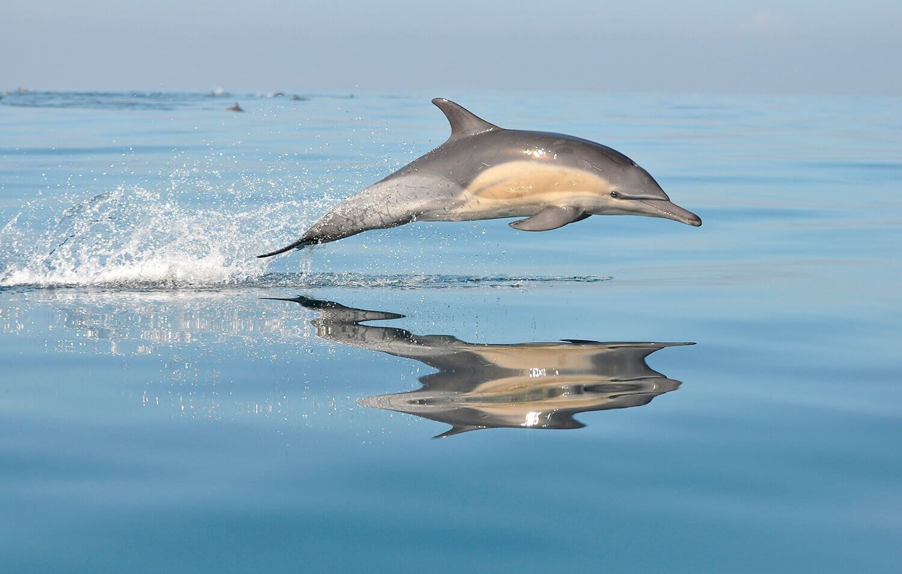

<!DOCTYPE html>

<html>
	<head>

		<title>
		Orca
		</title>
	</head>
</html>

<h1> Orca </h1>
<p></p>

<body bgcolor= #b2c8eb>
<p align="center"><font size= "4" color= "black">Orcinus orca</p>

<link rel="stylesheet" type="text/css" href="../css/estilos.css" media="screen">

<body>
<h2> Distribución geográfica </h2>
<p>La especie se encuentra en todos los océanos y en la mayoría de los mares del mundo. Tiene la distribución más amplia entre los cetáceos; habita con mayor frecuencia las aguas costeras en un rango de ochocientos kilómetros y las aguas frías a latitudes altas en ambos hemisferios.43​ En las regiones costeras ocupa principalmente bahías de baja profundidad, estuarios y desembocaduras de los ríos.120​</p>

<p>Al noreste del Pacífico se localiza al oriente del mar de Bering y se ha observado en latitudes tan altas como el mar de Beaufort y el mar de Chukotka hasta la isla de Wrangel; más al sur existen grupos en Alaska y la costa oeste de Canadá y Estados Unidos.43​ Al noroeste del Pacífico, habita las costas rusas de los mares de Bering y Ojotsk, y las aguas marítimas de Japón. Tiene escasa presencia en el Pacífico Central, donde solamente se han reportado avistamientos de una pequeña cantidad de individuos en Hawái.121​</p>

<p>Al norte del Atlántico habita en aguas de Groenlandia, Islandia, los mares de Barents y Blanco. En este sector se distribuye hasta el norte del estrecho de Hudson, estrecho de Lancaster, la bahía de Baffin, Svalbard, Tierra de Francisco José y Nueva Zembla. También se la ha visto con frecuencia en las costas de Noruega, Reino Unido, Irlanda y esporádicamente en el mar Mediterráneo.43​ Al oeste del Atlántico, frecuenta el mar de Labrador, las aguas marítimas de Nueva Escocia y la isla de Terranova en Canadá. También, con alguna frecuencia, se ha documentado su presencia en aguas del mar Caribe.43​</p>

<p>En el Hemisferio Sur se ha documentado su presencia en el extremo sur de Tierra del Fuego en América del Sur, las aguas de Sudáfrica, algunas zonas del océano Índico y el Pacífico sur en Australia, Nueva Zelanda e Islas Galápagos.13​ En la Antártida, se ha observado a lo largo de las masas de hielo del mar de Ross, a 78° de latitud Sur,122​ pero no se conocen detalles de su distribución, movimientos y abundancia, a pesar de los numerosos informes en el área.13​</p>


<h2> Biología </h2>
<p>De acuerdo a los estudios realizados en la población de orcas residentes del noreste del Pacífico, la mortalidad es extremadamente alta durante los primeros seis meses de vida, intervalo durante el cual mueren entre el 37 y 50 % de las crías.40​ A medida que crecen los jóvenes la mortalidad disminuye rápidamente y entre los 10,5 y 14,5 años es de solo el 0,5 %. En las hembras que alcanzan la edad reproductiva la mortalidad es baja, oscilando entre el 0 y el 1,7 % entre los 15,5 y 44,5 años; en los machos es más alta alcanzando 7,1 % después de los 30 años.40​ Los animales en cautividad tienen una esperanza de vida similar a los individuos silvestres y una mayor tasa de supervivencia de crías (96%)41​​</p>

<p>Al momento de nacer, la expectativa de vida de las orcas residentes es de aproximadamente veintinueve años para las hembras y diecisiete años para los machos.42​ Sin embargo, para los animales que alcanzan los seis meses se incrementa hasta cincuenta o sesenta años para las hembras y veintinueve años para los machos. Una vez superan los quince años de edad, la esperanza de vida asciende a sesenta y tres años para las hembras y treinta y seis para los machos. La edad máxima alcanzada por ambos géneros oscila los cien años en las hembras y entre sesenta y setenta años en los machos.42​</p>
</body>

<table border="5" class="center">
<tr>

<td>
		<p><a href = '../index.html'><figcaption style = 'text-align:center'>Inicio</figcaption ></a></p>
	</td>
	<td>
		<p><a href = '../html/ballenajorobada.html'><figcaption style = 'text-align:center'>Ballena jorobada</figcaption></a></p>
	</td>

	<td>
		<p><a href = '../html/delfin.html'><figcaption style = 'text-align:center'>Delfin</figcaption></a></p>
	</td>

</tr>
<tr>
	<td>
		<p><a href = '../html/delfinderio.html'><figcaption style = 'text-align:center'>Delfin de rio</figcaption></a></p>
	</td>
	
	<td>
		<p><a href = '../html/narval.html'><figcaption style = 'text-align:center'>Narval</figcaption></a></p>
	</td>
	<td>
		<p><a href = '../html/ballenaazul.html'><figcaption style = 'text-align:center'>Ballena azul</figcaption></a></p>


	</td>
</tr>

</table>

